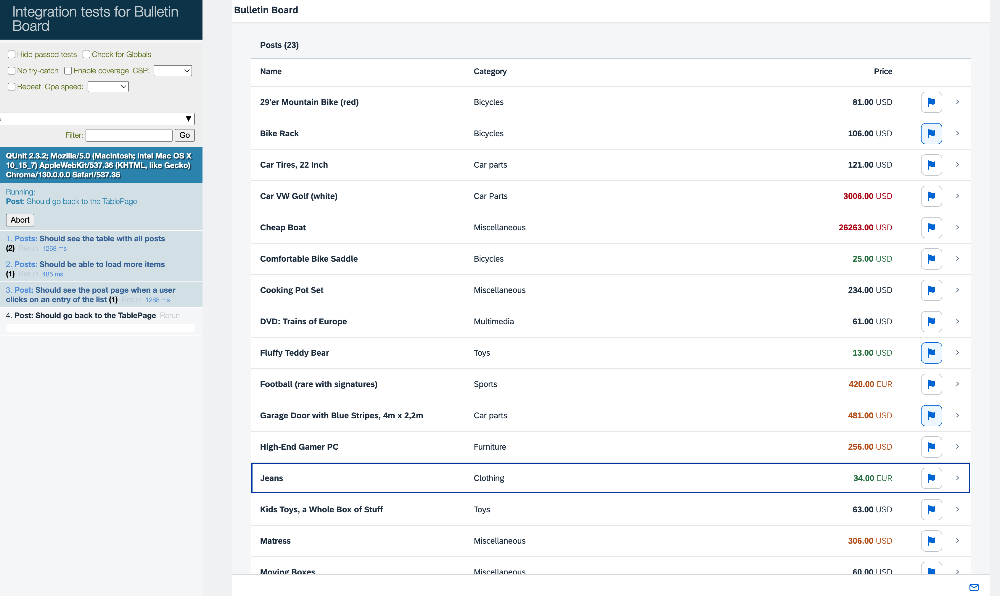

In this step we will introduce a new journey to test the post page. We write tests that trigger typical navigation events with OPA. Testing navigation greatly helps in reducing manual testing efforts as it covers a lot of testing paths. It is good practice to cover every view of your application with at least one test, since OPA will check if an exception is thrown. In this way you can detect critical errors very fast.

You can view and download all files in the Demo Kit at Testing - Step 8.
/*global QUnit*/
sap.ui.define([
"sap/ui/test/opaQunit",
"./pages/Worklist",
"./pages/Browser",
"./pages/Post"
], function (opaTest) {
"use strict";
QUnit.module("Post");
opaTest("Should see the post page when a user clicks on an entry of the list", function (Given, When, Then) {
// Arrangements
Given.iStartMyApp();
//Actions
When.onTheWorklistPage.iPressOnTheItemWithTheID("PostID_15");
// Assertions
Then.onThePostPage.theTitleShouldDisplayTheName("Jeans");
});
opaTest("Should go back to the TablePage", function (Given, When, Then) {
// Actions
When.onThePostPage.iPressTheBackButton();
// Assertions
Then.onTheWorklistPage.iShouldSeeTheTable();
});
opaTest("Should be on the post page again when the browser's forward button is pressed", function (Given, When, Then) {
// Actions
When.onTheBrowser.iPressOnTheForwardButton();
// Assertions
Then.onThePostPage.theTitleShouldDisplayTheName("Jeans");
// Cleanup
Then.iTeardownMyApp();
});
});This new journey for the Post page introduces a test case that tests the navigation and also tests if the browser history is in the correct state, so that the user can navigate through our app with the back and forward button of the browser. This time, instead of adding a test we will add a new journey.
A journey represents a user's task in our app. Journeys start with the startup of our app and end with a teardown in the last test. We don't write isolated tests here, since starting up the app takes a lot of time and doing it too often slows down our test execution and feedback time considerably. If the execution speed of the tests is no problem, you may also write isolated tests.
Our new journey consists of three user interaction steps:
User chooses a Post to view the details
User chooses the Back button on the Detail page of the Post to see the list again
User chooses the Forward button to revisit the details of the post
sap.ui.define([
'sap/ui/test/Opa5',
'sap/ui/test/matchers/AggregationLengthEquals',
'sap/ui/test/matchers/I18NText',
'sap/ui/test/matchers/BindingPath',
'sap/ui/test/actions/Press'
], function (Opa5, AggregationLengthEquals, I18NText, BindingPath, Press) {
"use strict";
var sViewName = "Worklist",
sTableId = "table";
Opa5.createPageObjects({
onTheWorklistPage: {
actions: {
…
,
iPressOnTheItemWithTheID: function (sId) {
return this.waitFor({
controlType: "sap.m.ColumnListItem",
viewName: sViewName,
matchers: new BindingPath({
path: "/Posts('" + sId + "')"
}),
actions: new Press(),
errorMessage: "No list item with the id " + sId + " was found."
});
}Now that we have written our spec how the navigation to the
Post page is planned, we first need to implement the
"click" on a list item. To identify the item we are looking for, we use the
BindingPath matcher. Doing so, we make sure that even if the
order of the items changes, we always choose the same item. The
press action simulates a user click on the item.
sap.ui.define([
'sap/ui/test/Opa5',
'sap/ui/test/matchers/Properties',
'sap/ui/test/actions/Press'
], function (Opa5, Properties, Press) {
"use strict";
var sViewName = "Post";
Opa5.createPageObjects({
onThePostPage: {
actions: {
iPressTheBackButton: function () {
return this.waitFor({
id: "page",
viewName: sViewName,
actions: new Press(),
errorMessage: "Did not find the nav button on object page"
});
}
},
assertions: {
theTitleShouldDisplayTheName: function (sName) {
return this.waitFor({
success: function () {
return this.waitFor({
id: "objectHeader",
viewName: sViewName,
matchers: new Properties({
title: sName
}),
success: function (oPage) {
Opa5.assert.ok(true, "was on the remembered detail page");
},
errorMessage: "The Post " + sName + " is not shown"
});
}
});
}
}
}
});
});
After navigating to the Post page, we need a new OPA5
Page object for the page to implement our actions and
assertions.
An OPA5 Page object is used to group and reuse actions and
assertions that are related to a specific part of the screen. For more information,
see Cookbook for OPA5.
We implement a press event on the page's nav button
and we assert that we are on the correct page by checking the title in the object
header. The nav button is retrieved via DOM reference, because the
page does not offer us an API here. Since the DOM ID is the most stable attribute,
we are using this to retrieve the button.
…
,
iShouldSeeTheTable: function () {
return this.waitFor({
id: sTableId,
viewName: sViewName,
success: function () {
Opa5.assert.ok(true, "The table is visible");
},
errorMessage: "Was not able to see the table."
});
}
…After going back, we want to move forwards again, but we need to check if the back
navigation actually took place. So we assert that we are back on our table of posts
again. We achieve this with a very simple waitFor statement just
checking if the table is present.
sap.ui.define([
'sap/ui/test/Opa5'
], function (Opa5) {
"use strict";
Opa5.createPageObjects({
onTheBrowser: {
actions: {
iPressOnTheForwardButton: function () {
return this.waitFor({
success: function () {
Opa5.getWindow().history.forward();
}
});
}
},
assertions: {}
}
});
}); We now implement an action that is triggered when the Forward
button is chosen. Since it is not part of the browser's UI and it could be used on
any page of our application, we just declare our browser's UI as an own OPA page
object. To simulate the Forward button, we use the
history API of the browser. We have to wrap our action in a
waitFor statement. Otherwise the action would be executed
before our app is started.
sap.ui.define([
"sap/ui/test/Opa5",
"./arrangements/Startup",
"./WorklistJourney",
"./PostJourney"
], function (Opa5, Startup) {
"use strict";
Opa5.extendConfig({
arrangements: new Startup(),
viewNamespace: "sap.ui.demo.bulletinboard.view.",
autoWait: true
});
});To make navigation tests complete, we add the new journey to the
opaTests.qunit.js file that is invoked by the test
suite.
If you execute the tests now, you can see in the logs of the developer tools that OPA is waiting for the object page to be displayed. Of course, this will not happen as it is not yet implemented. But we already have a pretty good idea on how we will implement the feature in the next step.